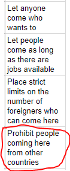
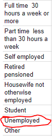
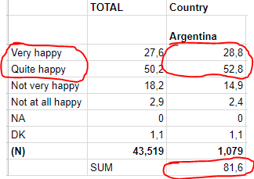
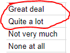
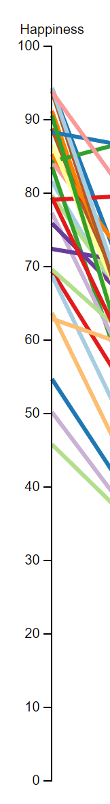
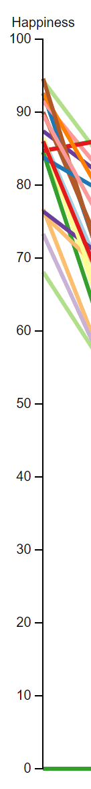

You can move around the variable axes and brush over them to filter.
Numbers are in percentage and 0 means there's no data.
The overall question I was curious in was what factors contribute to happiness in the world and how it has changed over time. So I chose interesting questions which I thought could affect happiness such as religion, family, trust in people etc.
The data had to be transformed into some form that would be easier to analyse. In some questions from WVS I had to choose the answer which yielded the clearest answer such as “immigration prohibition” instead of "Let anyone come" and "Let some came". The other answers you could say were different scales of “yes” and therefore I took the “hard” no answers. From the “Happiness” and “Trust in Press” questionnaires I summed up all positive answers to get a somewhat “hard” yes. Time is represented by different charts.
   My first thought of visual model to use for the 8 variable data was a parallel coordinate system. I thought that it would be a good way to visualize and compare different data points with that many dimensions.
The most interesting results from this visualization was that I couldn’t see any correlation between life satisfaction and happiness or happiness and religion which I thought would have been strongly correlated with each other.
To be able to compare different time intervals I divided the data in to different charts with data from that particular time period.
A chose to visualize a timeline where each point is a chart with data corresponding to that time period.
What I can interpret comparing the overall combined happiness from all countries is that more people has become happier since 1995-1999.
 In this project I got to learn D3.js better and I understand now how you are supposed to work with it codewise. I didn’t have that much experience with web programming and with this project I have also been practicing those skills. But the biggest learning experience for me I think was working wih the information visualization pipeline in practice.
Parallel Coordinate template by: Jason Davies